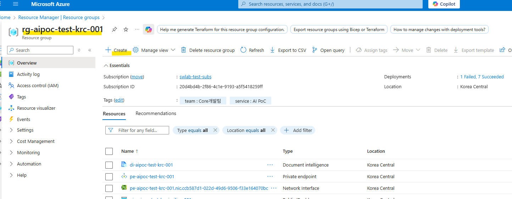
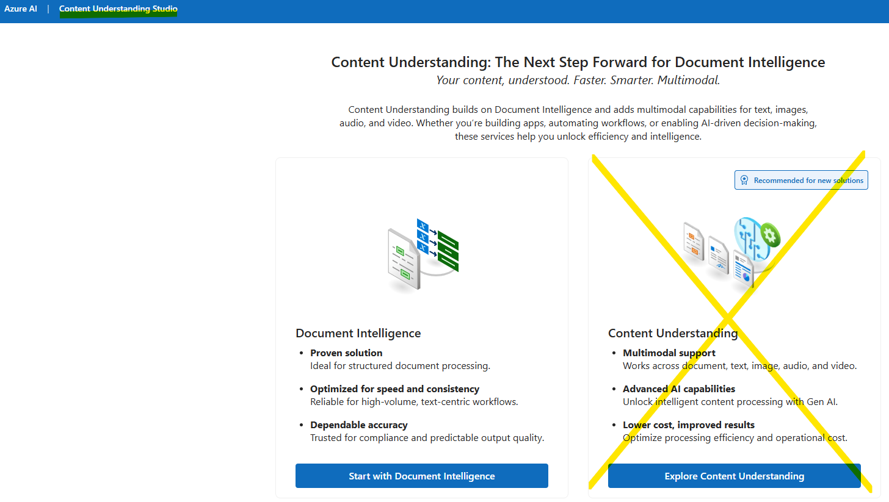
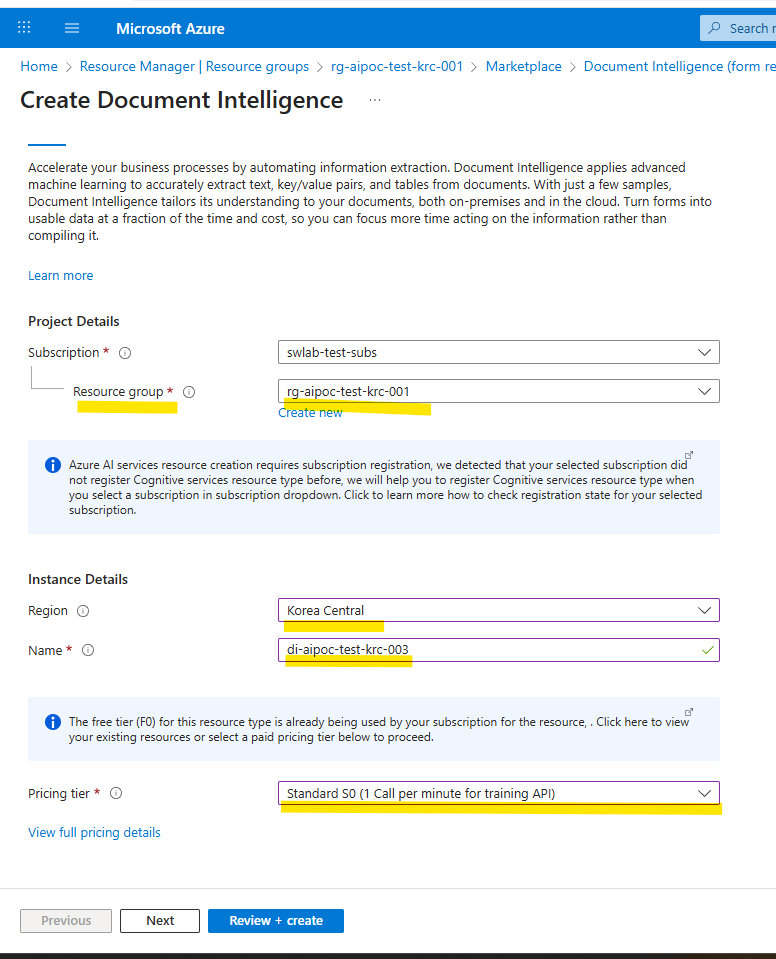
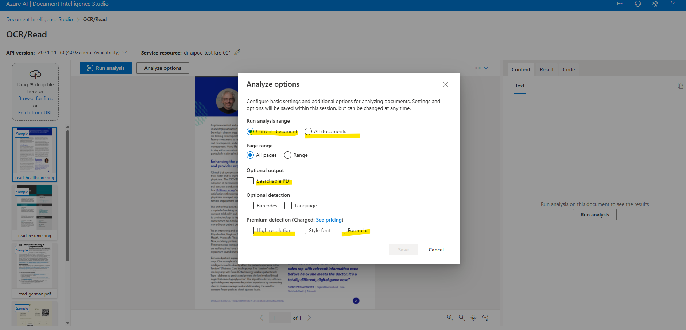

1 Azure Document Intelligence 개요
Azure Document Intelligence(이전 Form Recognizer)는 AI 기반 문서 이해 서비스로, 스캔 문서나 이미지에서 텍스트, 표, 구조를 자동으로 추출한다.
1.1 주요 특징
- OCR (Optical Character Recognition): 인쇄 및 필기 텍스트 인식
- 구조 분석: 표, 키-값 쌍, 체크박스 등 문서 레이아웃 파악
- 사전 학습 모델: 영수증, 청구서, ID 문서 등 즉시 사용 가능
- 사용자 지정 모델: 비즈니스 특화 문서에 대한 맞춤형 학습 지원
2 주요 기능 및 모델
2.1 문서 분석 모델
모든 문서 유형에 대한 기본적인 텍스트 및 구조 추출을 제공한다.
Read (OCR)
- 인쇄 텍스트 및 필기체 인식
- 검색 불가능한 PDF를 검색 가능한 PDF로 변환
- 고해상도 추출 및 다국어 지원
- 수기(손글씨)를 제외한 텍스트는 거의 100%에 가까운 정확도의 성능을 보임
- 만약 복잡한 수식이 있으면 기본 옵션으론 추출 정확도가 매우 떨어지지만
- 고급 기능에서formula모드를 선택하면 정확도가 100%가까지 올라간다.(별도 요금 청구됨)
Layout
- 문서 구조 분석 (표, 표 머리글, 체크박스, 라디오 버튼 등)
- 텍스트와 구조 요소의 위치 정보 제공
General Document
- content
- searchable pdf로도 같이 다운로드 가능
- 하지만 출력된 pdf에 수식은 텍스트로 변환되지 않고 이미지로 출력된다.
- result: 범용 문서에서 구조화된 데이터 반환
- 키-값 쌍(Key-Value Pairs) JSON 추출
- code: python code로 OCR 분석을 할 수 있는 code도 제공
2.2 특정 문서에 사전 학습된 모델
특정 문서 유형에 최적화된 모델로 별도 학습 없이 즉시 사용 가능하다.
| 모델 | 추출 정보 | 활용 분야 |
|---|---|---|
| Invoice (청구서) | 송장 번호, 공급자/고객 정보, 총액, 세금, 품목 | 재무/회계 자동화 |
| Receipt (영수증) | 판매점, 날짜/시간, 총액, 품목 | 경비 처리 |
| ID Document | 여권/면허증 정보, MRZ | 신원 확인 (KYC) |
| Contract (계약서) | 계약 당사자, 주요 날짜, 조항 | 법률/금융 |
| Bank Statement | 계좌 정보, 거래 내역 | 금융 서비스 |
| US Tax Forms | W-2, 1099, 1040 등 | 세무 자동화 |
2.3 사용자 지정 모델
비즈니스 고유 문서에 대한 맞춤형 모델을 학습시킬 수 있다.
Custom Extraction (추출 모델)
- 정적 레이아웃(템플릿) 또는 동적 문서에서 특정 필드 추출
- 최소 5개 샘플 문서로 학습 가능
Custom Classification (분류 모델)
- 문서 유형 자동 분류 (예: 계약서 vs 청구서)
- 적절한 추출 모델 자동 선택
Composed Model (복합 모델)
- 여러 추출 모델을 결합하여 단일 API로 호출
2.4 확장 기능 (Add-on)
기본 기능 외 선택적으로 활성화할 수 있는 고급 기능이다.
- Formulas: 수학 수식 인식
- Barcodes: 바코드 정보 추출
- Font/Style: 텍스트 스타일 속성 (굵게, 기울임 등)
- Query Fields: 자연어 질문으로 원하는 필드 추출 (Generative AI 기반)
Document Intelligence Studio를 통해 코드 없이 시각적으로 모델을 테스트하고 학습할 수 있다.
3 요금 구조
Azure Document Intelligence는 처리한 페이지 수와 모델 종류에 따라 과금되는 종량제 방식이다.
3.1 주요 요금표 (S0 표준 등급 기준)
| 항목 | 모델/기능 | 1,000페이지당 가격 | 비고 |
|---|---|---|---|
| 무료 (F0) | 모든 모델 | 월 500페이지 무료 | 테스트용, 응답 2페이지 제한 |
| Read (OCR) | 텍스트 추출 | $1.50 | 가장 기본적인 OCR |
| Prebuilt Models | Layout, Invoice, Receipt 등 | $10 | 특정 문서 최적화 |
| Query Fields | AI 기반 필드 추출 | $10 | 자연어 질의 방식 |
| Custom Classification | 문서 유형 분류 | $3 | 문서 종류 식별 |
| Custom Extraction | 맞춤형 추출 모델 | $30 | 가장 높은 단가 |
| Add-ons | 고해상도, 수식, 스타일 등 | $6 (추가) | 기본 모델에 추가 |
| Model Training | 사용자 지정 모델 학습 | 시간당 $3 | 학습 시에만 발생 |
3.2 비용 최적화 팁
모델 선택 전략
- 단순 텍스트 추출: Read ($1.50) 사용
- 구조 추출: Layout ($10) 사용
- 특정 문서: Prebuilt ($10) 사용
- 고유 양식: Custom ($30) 사용
약정 요금제 (Commitment Tier)
- 월별 페이지 수를 미리 약정하면 할인된 단가 적용
- 대량 처리 시 비용 절감 효과
무료 계층 활용
- F0 계층으로 월 500페이지까지 무료 테스트
- 개발/PoC 단계에서 활용
참고: 정확한 비용 산정은 Azure 가격 계산기에서 확인 가능
4 인스턴스 생성 및 사용 방법
4.1 Azure Portal Browser 를 통한 리소스 생성
- 반드시, 본인에게 할당된 resource group 안에서 document intelligence instance를 생성해야한다.
- 그냥 홈페이지에서 생성하면 Vnet 방화벽 설정이 불일치하여 서비스를 이용할 수 없고 아마 instance 생성 자체가 안될 것이다.

- 검색창에
document intelligence (form recognizer)ordocument intelligence입력하여 검색 및 클릭
- Subscription & Plan을 토글 박스에서 선택해
create버튼 클릭
- Basic Setting (빈칸을 모두 채워 넣어야 한다.)
- resource group: 본인의 resource group을 반드시 선택해야 한다. (후에 vnet의 subnet과 연결이 되기 위해 필요)
- region: resource group의 region과 일치시켜준다.
- 참고로 외부 서버를 이용하는 것은 요금이 더 나가는 것으로 파악됨
- 가까운 리전 선택 시 지연시간 감소
- 참고로 외부 서버를 이용하는 것은 요금이 더 나가는 것으로 파악됨
- name: 인스턴스의 이름을 원하는 방식 or 조직내 작명 규칙에 따라 작성한다.
- 고유한 이름 필요 (예:
doc-intel-myproject-01)
- 소문자, 숫자, 하이픈만 사용 가능
- 조직내 작명 규칙 예시: [서비스 두음글자]-[resource group name]-[region name]-[serial number]
- name 예시: di-aipoc-test-krc-003
- 고유한 이름 필요 (예:
- pricing tier: 초기 사용자는 2개의 옵션이 있다
- F0: 무료 할당량과 제한된 기능으로 서비스를 test 해볼 수 있다.
- 500 page 초과 문서 분석 못함
- Content Understanding 기능 사용 못함
- adds on 기능 사용 못함 (formula 집중 추출 등)

F0 Service in Content Understand Studio - 500 page 초과 문서 분석 못함
- Standard S0: 종량제 (프로덕션용), 모든 기능을 제한없이 이용할 수 있다.
- F0: 무료 할당량과 제한된 기능으로 서비스를 test 해볼 수 있다.

- Network 설정 (선택 사항)
- 퍼블릭 액세스
- 기본: 모든 네트워크에서 접근 가능
- 보안 강화: 특정 VNet만 허용
- 기본: 모든 네트워크에서 접근 가능
- 프라이빗 엔드포인트
- 기업 환경: 프라이빗 네트워크만 접근 허용
- 추가 비용 발생 (테스트에는 불필요)
- 기업 환경: 프라이빗 네트워크만 접근 허용
- type: Selected networks, configure network security for your Azure AI services resource. 선택
- 여기서 resource group 내에서 인스턴스를 생성하지 않았으면 자동 연결이 불가하다.
- Identity 설정
- 관리 ID
- 시스템 할당 ID 활성화 시 Key Vault 등과 안전한 연동 가능
- 선택 사항이지만 프로덕션 환경에서는 권장
- 시스템 할당 ID 활성화 시 Key Vault 등과 안전한 연동 가능
- 태그
- 비용 추적용:
Environment: Production,Project: InvoiceOCR
- 부서별 분류:
Department: Finance
- 비용 추적용:
- status를 on으로 설정하여 ID를 부여받으면 다른 service resource와 연결을 하여 좀 더 편하게 서비스를 이용할 수 있나보다 (해보진 않음)
- 본인은 off로 함
- Tags 설정 (Optional)
- 본인은 그냥 pass
- Review + Create
- 설정 검토
- 만들기 클릭
- 배포 완료 (약 1-2분 소요)

키 및 엔드포인트 확인
배포 완료 후:
- 리소스로 이동 클릭
- 좌측 메뉴에서 키 및 엔드포인트 선택
- 다음 정보 복사:
- 키 1 또는 키 2 (API 인증용)
- 엔드포인트 (예:
https://doc-intel-myproject-01.cognitiveservices.azure.com/)
- 키 1 또는 키 2 (API 인증용)
보안 주의사항
- 키는 절대 코드에 하드코딩하지 말 것
- 환경변수 또는 Key Vault 사용 권장
- 키 정기 재생성 (6개월마다)
- 생성된 service resource를 resource group에서 확인하고 클릭하면
Go to Document Intelligence Studio로 연결되는 버튼을 볼 수 있다.
Content Understand Studio로 연결되고start width document intelligence또는explore content understanding서비스 버튼 눌러 서비스를 이용하면 된다.
- 본인은
start width document intelligence만으로 충분하여 기본 서비스를 선택
- 세부 기능 선택
- 여러 기능들이 리스팅 되어 있다. 본인은 OCR/Read를 선택
- 기존 사용자라면 페이지 이동시 본인이 이용하고 있는 Azure Directory를 선택하여 전환해야할 수도 있다.

- OCR - Run Analysis Options
- F0 Price Tier라면 500 page가 넘는 문서는 분석이 불가하다.
- searchable PDF: 분석 결과를 pdf 형태로 다운로드 받을 수 있고 이미지로 구성된 pdf라면 부분적 또는 전체 내용이 텍스트화 되어 검색이 가능해진다.
- Premium Detection
- Formula: 수식 강화 추출 서비스로 정확도는 체감상 90% 이상이다. 이 기능이 없이는 수식은 거의 추출이 불가능하다.
- Formula: 수식 강화 추출 서비스로 정확도는 체감상 90% 이상이다. 이 기능이 없이는 수식은 거의 추출이 불가능하다.
- 우측 창을 보면 Content, Result, Code 형태로 출력물이 생기고 Result 섹션에 Json 파일로 결과를 다운로드 받을 수 있다.
4.2 Azure CLI를 통한 리소스 생성
사전 준비
1. Azure CLI 설치
2. Azure 계정 로그인
# Azure 로그인
az login
# Document Intelligence 리소스 생성
az cognitiveservices account create \
--name "MyDocumentIntelService" \
--resource-group "MyResourceGroup" \
--kind "FormRecognizer" \
--sku "S0" \
--location "eastus" 주의사항
- Azure CLI는 리소스 관리용이며, 실제 문서 분석 API 호출은 SDK 필요
- --sku 옵션: F0(무료), S0(표준) 선택 가능
- --location: 가까운 리전 선택 (한국의 경우 koreacentral 권장)
4.3 Python SDK를 통한 문서 분석
설치 및 설정
# Python SDK 설치
pip install azure-ai-documentintelligence
# 환경변수 설정 (Windows CMD)
set AZURE_DOCUMENT_ENDPOINT=https://your-resource.cognitiveservices.azure.com/
set AZURE_DOCUMENT_KEY=your-api-key
# 환경변수 설정 (PowerShell)
$env:AZURE_DOCUMENT_ENDPOINT="https://your-resource.cognitiveservices.azure.com/"
$env:AZURE_DOCUMENT_KEY="your-api-key" 기본 사용 예제 (영수증 분석)
from azure.ai.documentintelligence import DocumentIntelligenceClient
from azure.core.credentials import AzureKeyCredential
import os
# 클라이언트 초기화
endpoint = os.environ["AZURE_DOCUMENT_ENDPOINT"]
key = os.environ["AZURE_DOCUMENT_KEY"]
client = DocumentIntelligenceClient(endpoint, AzureKeyCredential(key))
# 영수증 분석
with open("receipt.jpg", "rb") as f:
poller = client.begin_analyze_document(
"prebuilt-receipt",
analyze_request=f,
content_type="application/octet-stream"
)
result = poller.result()
# 결과 출력
for receipt in result.documents:
print(f"판매점: {receipt.fields.get('MerchantName').value}")
print(f"총액: {receipt.fields.get('Total').value}")
print(f"거래일시: {receipt.fields.get('TransactionDate').value}") 레이아웃 분석 예제
# 문서 구조 분석
with open("document.pdf", "rb") as f:
poller = client.begin_analyze_document(
"prebuilt-layout",
analyze_request=f,
content_type="application/pdf"
)
result = poller.result()
# 표 추출
for table in result.tables:
print(f"표 감지: {table.row_count}행 x {table.column_count}열")
for cell in table.cells:
print(f" [{cell.row_index}, {cell.column_index}]: {cell.content}") 4.4 cURL을 통한 REST API 직접 호출
고급 사용자를 위한 HTTP 직접 요청 방식이다.
# 분석 시작 요청
curl -i -X POST "https://[YOUR_ENDPOINT]/formrecognizer/documentModels/prebuilt-layout:analyze?api-version=2023-07-31" \
-H "Content-Type: application/json" \
-H "Ocp-Apim-Subscription-Key: [YOUR_API_KEY]" \
-d "{\"urlSource\": \"https://example.com/document.pdf\"}"
# 응답에서 Operation-Location 헤더 확인 후 결과 조회
curl -X GET "[Operation-Location URL]" \
-H "Ocp-Apim-Subscription-Key: [YOUR_API_KEY]" 4.5 Document Intelligence Studio 활용
코드 없이 웹 UI로 테스트할 수 있는 공식 도구이다.
접속 방법
1. Document Intelligence Studio 접속
2. Azure 계정으로 로그인
3. 리소스 선택 또는 새로 생성
주요 기능
- 샘플 문서로 즉시 테스트
- 모델 성능 비교
- 사용자 지정 모델 학습 및 테스트
- 생성된 코드 스니펫 확인
4.6 일반적인 문제 해결
API 키 오류
AuthenticationFailed: Access denied due to invalid subscription key → Azure Portal에서 Key와 Endpoint 재확인
Region 불일치
ResourceNotFound: The specified resource does not exist → Endpoint URL의 리전이 리소스 생성 리전과 일치하는지 확인
할당량 초과
429 TooManyRequests: Rate limit exceeded → F0 계층은 초당 1요청, 분당 20요청 제한 (S0으로 업그레이드 권장)